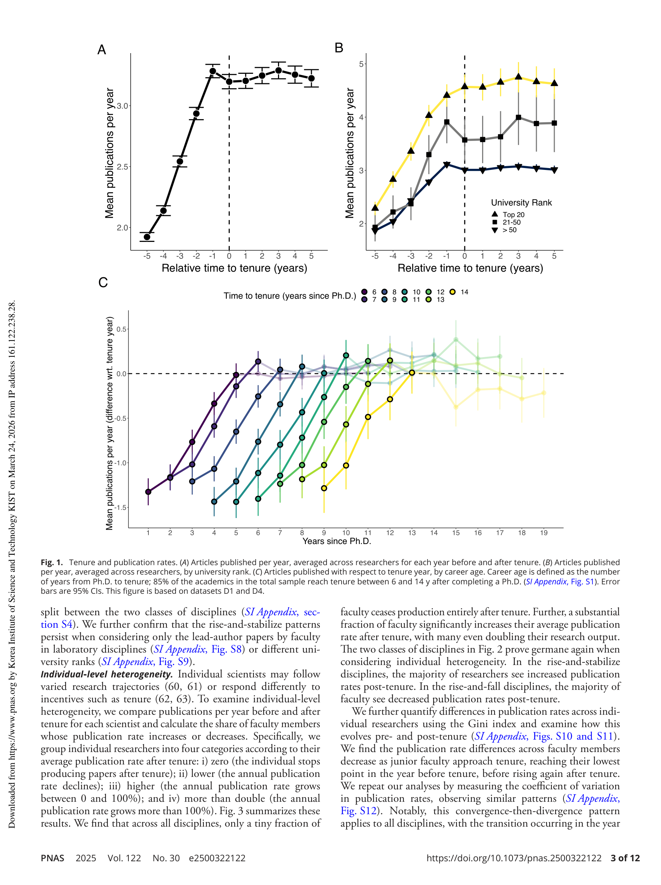

Figure 1
저자: Giorgio Tripodi, Xiang Zheng, Yifan Qian, Dakota Murray, Benjamin F. Jones, Chaoqun Ni, Dashun Wang | 날짜: 2025-07-29 | DOI: 10.1073/pnas.2500322122
Figure 1
본 연구는 미국 대학의 tenure(종신재직권) 제도가 과학자의 연구 생산성, 연구 영향력, 그리고 연구 방향에 미치는 영향을 대규모 데이터를 통해 체계적으로 분석하였다. 7개의 데이터 소스를 통합하여 15개 학문 분야에 걸친 12,000명 이상의 faculty를 추적한 결과, tenure 획득 시점이 연구 궤적의 뚜렷한 전환점임을 발견하였다. Tenure 이후 연구자들은 더 novel한 연구를 수행하지만, 고피인용 논문의 비율은 감소하는 패턴을 보였다.

Figure 2
Tenure는 미국 학술 시스템의 핵심 제도이지만, 연구 궤적에 미치는 영향은 체계적으로 이해되지 않았다. 기존 연구들은 특정 분야나 소규모 faculty 그룹에 국한되어 있었으며, 종합적인 종단 데이터의 부재로 인해 체계적 평가가 제한적이었다. Tenure는 이론적으로 세 가지 메커니즘으로 작용할 수 있다: (1) selection mechanism으로서 고성과 연구자를 선별하는 기능, (2) dynamic incentive mechanism으로서 tenure 전 높은 성과를 유도하되 이후에는 moral hazard를 야기할 수 있는 기능, (3) creative search mechanism으로서 고위험 연구를 장려하는 기능이다.

Figure 3

Figure 4

Figure 5
본 연구는 tenure와 연구 궤적 간의 관계를 분석한 가장 대규모이자 포괄적인 연구이다. 첫째, 기존 문헌에서 가정했던 매끄러운 생산성 곡선과 달리 tenure 시점에서 뚜렷한 전환점이 존재함을 보였다. 둘째, lab-based vs. non-lab-based 분야 간의 체계적 차이를 밝혔다. 셋째, tenure 이후의 novelty 증가와 impact 감소 사이의 trade-off를 실증적으로 제시하였다. 다양한 control group과의 비교를 통해 이러한 패턴이 tenure 제도 자체와 밀접하게 연관됨을 입증하였다.
저자들이 밝힌 한계로는, (1) 본 연구의 결과가 상관관계이며 인과관계를 확립하지 못한다는 점, (2) tenure track에 진입하는 연구자가 이미 선택된 표본이라는 점이 있다. 또한 COVID-19의 영향을 배제하기 위해 분석 기간을 제한하였으나, 이로 인해 최근 학술 환경의 변화(예: 원격 협업 증가, AI 도구 활용)가 반영되지 못했다. 향후 연구에서는 tenure 제도의 인과적 효과를 평가하기 위한 준실험적 설계나, tenure 이후 연구 방향 전환의 세부 메커니즘(멘토링, 펀딩, 학과 문화 등)에 대한 심층 분석이 필요하다.
총평: 7개 대규모 데이터를 통합한 탁월한 실증 연구로, tenure 제도와 연구 궤적 간의 관계에 대한 체계적이고 재현 가능한 증거를 제시한다. Science of science 분야에서 tenure 연구의 새로운 기준을 제시한 PNAS급 논문이다.